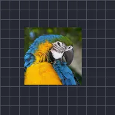

Willekeurige verplaatsing

Beweegt de laag automatisch vloeiend maar willekeurig in de tijd. Seed kiest een andere beweging, Snelheid bepaalt hoe snel die rondzwerft en Evolutie verschuift het patroon.
Willekeurige verplaatsing beweegt de laag vloeiend en willekeurig rond, zoals een zwevende camera. Uitslag is hoe ver hij afdwaalt, Snelheid hoe snel, en Seed kiest een ander pad. Anders dan bij Automatisch schudden is de beweging traag en vloeiend in plaats van schokkerig.
Instellingen
| Instelling | Type | Bereik | Standaard |
|---|---|---|---|
| Uitslag | Getal | 0 tot 2000 | 50 |
| Evolutie | Getal | 0 tot 2000 | 0 |
| Seed | Getal | 0 tot 5 | 0 |
| Verstrooiing | Getal | 0% tot 200% | 50% |
| Snelheid | Getal | 0 tot 50 | 1 |
| Stijl | Keuze | Klassiek, Standaard | Standaard |